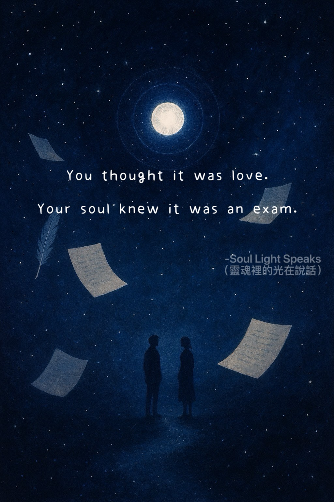
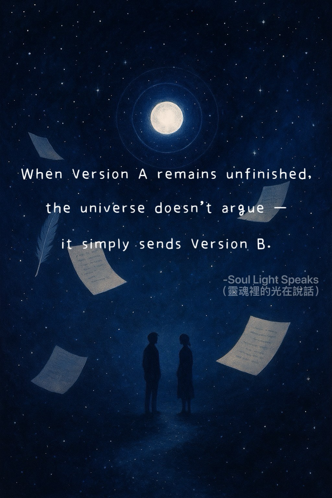
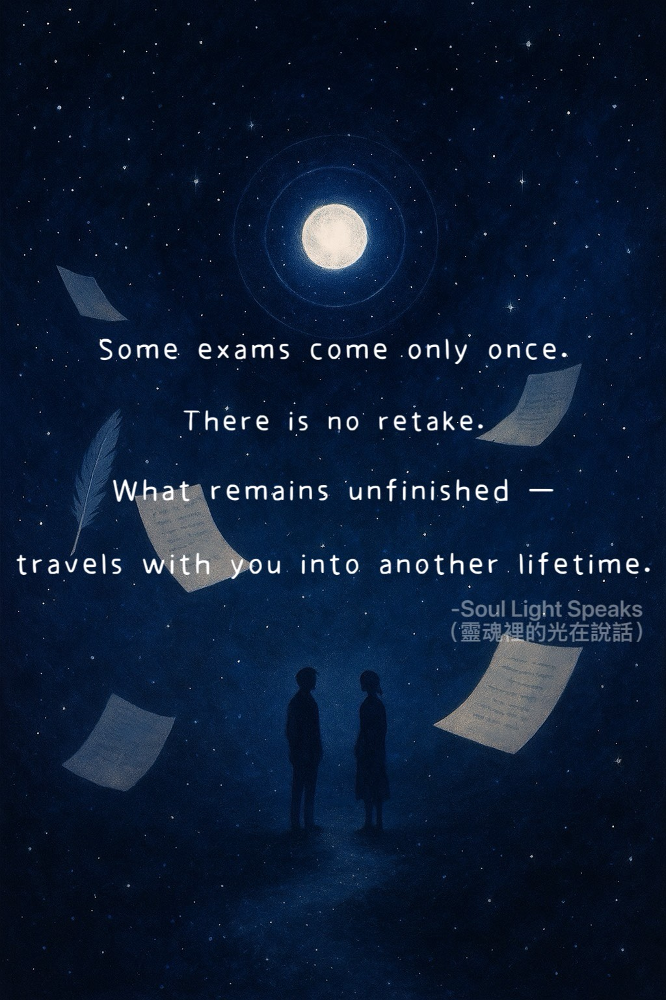

Your soul knew it was an exam.

the universe doesn’t argue — it simply sends Version B.
but the energy feels strangely familiar — because the lesson is the same.

are never easy.
They are meant to shape you,
not comfort you.
They mirror you.
They walk beside you.
Examiner and soul companion — all at once.
Some people
never enter your life by chance.
They arrive
carrying a lesson
your soul is meant to learn.
Sometimes,
the very same lesson
returns through someone new.
Like Version A
and Version B.
If Version A remains unfinished,
the universe doesn’t necessarily end the lesson.
Instead,
it presents the same lesson
in a different form—
through someone
whose soul feels strangely familiar.
Their appearance is different.
Their personality is different.
Their story is different.
Yet as time goes by,
the familiarity,
the emotions that keep resurfacing,
and the moments that make you pause and reflect
all seem to point
to the very same lesson.
In the end,
the person who truly needs to change
is never the other person.
It is you.
Some people
help you practice.
Some people
help you grow.
Every encounter
has its own purpose.
Every relationship
carries a lesson.
The lessons found in deep relationships
are rarely just about love.
They are about trust,
responsibility,
acceptance,
growth,
and everything
two people learn
while walking through life together.
Be grateful
for everyone
who has crossed your path.
Some teach you
how to cherish.
Some teach you
how to let go.
Some bring light into your life.
Others help you
discover the parts of yourself
you never knew were there.
They are mirrors
reflecting who you are,
and companions
on your soul’s journey of growth.